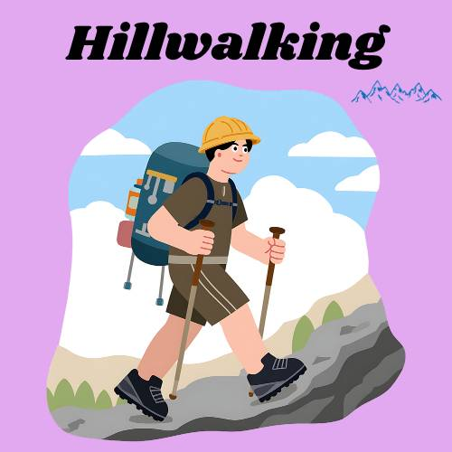
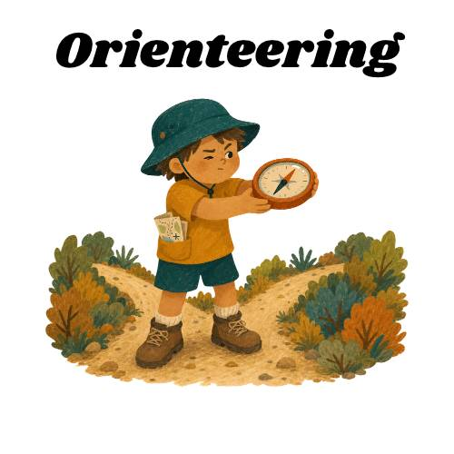

Welcome to Lochquarry Outdoor Centre!
Come to Lochquarry Outdoor Centre and enjoy exciting activities in nature.
There are lots of fun activities for adults and students to try, such as hillwalking, Archery, orienteering and axe throwing.
Join us today for an unforgettable outdoor adventure!
|
 |
HillwalkingActivity detailsFrom short walks around the site to Munro-bagging expeditions, Lochquarry has it all! Walks can be tailored to suit any age or experience of groups and can last from one hour to all day adventures. Max group size 12. Ages 6+ 3rd December, 2026 All activities are free. |

|
ArcheryActivity detailsAre you the next Robin Hood? Learn to hold a bow and fire an arrow and take part in fast and fun shootout competitions. Max group size 6. Ages 6+ 14th December, 2026 All activities are free. |
|
 |
OrienteeringActivity detailsSet in the centre’s grounds, find all the markers and make it back in time to show off your superior navigation knowledge. Groups of 2+, one map per group. Ages 6+ 20th December, 2026 All activities are free. |

|
Axe-ThrowingActivity detailsTake yourself back to a time of Vikings and have a go at throwing an axe. Try to hit the target, better yet throw yourself a bullseye. Max group size 6. Ages 10+ 29th December, 2026 All activities are free. |
"The best views come after the hardest climb." – GraciousQuotes
Customer Comments
|
‘The Hillwalking activity was very enjoy able.it helped me discoverthe fun of hillwalking’ − Mr.beem,Teacher ‘The Scouts loved every second of it, especially the powerboating’ − Martin Bainbridge, Scout Leader. ‘I really enjoyed aechery and learned how to aim and shoot accurately.’ − Scott, aged 12. "Lochquarry Outdoor Centre is set in acres of land in the heart of the majestic Argyll hills." – Scott, aged 12. |
For enquiries or bookings, please don't hesitate to get in touch with us.
Address:
Location: Lochquarry Outdoor Centre, Argyll Hills, Scotland
Email: Lochquarry@scotland.com
Phone: +44 1475 229 8311
Enquiry Hours
- Monday to Saturday: 9 am to 8 pm
- Sunday: Closed